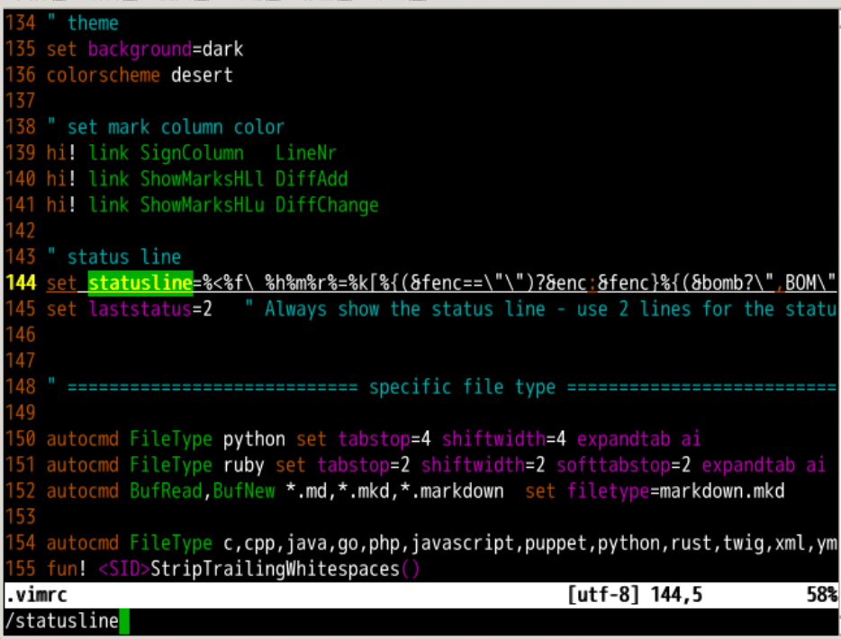
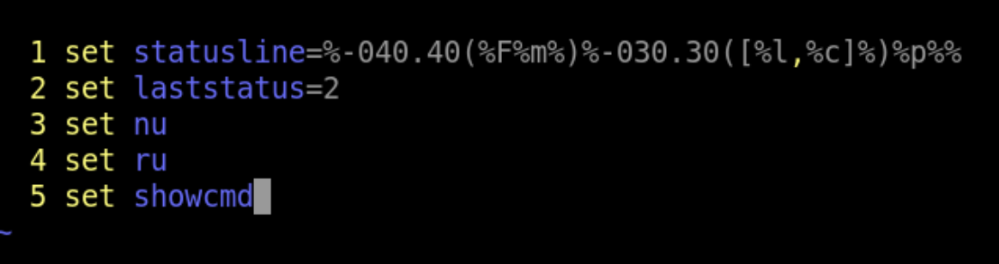
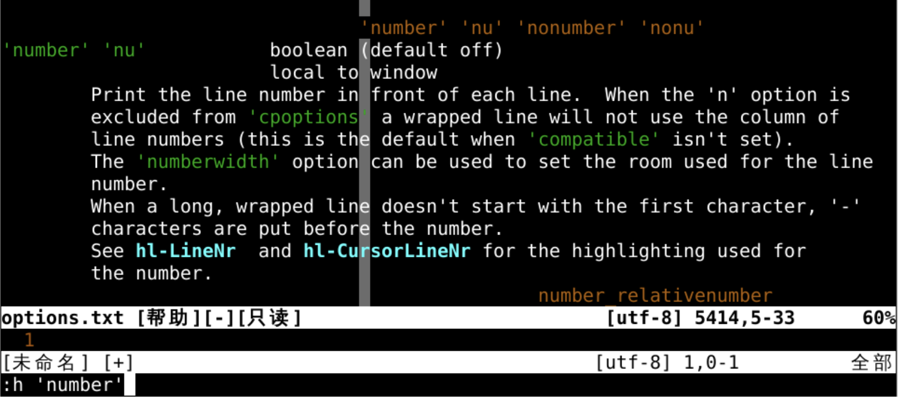

配置文件
回忆上节课内容🤔
- 我们上次了解到了状态横条
- 通过转义表示
item - 控制
item宽度的方法 - 将
item成组的方法 -
还有一个总开关
laststatus -
但是每次都要写很长的一段话来配置很麻烦啊
- 我们能否写一个配置文件，让
vim每次自动配置好呢？🤔

配置文件
#首先打开原来的配置文件，~代表用户文件夹
vi ~/.vimrc
#可以用/statusline找到状态条的写法

~/.vimrc
- 可以发现
~/.vimrc就是vi的配置文件 - 如果这个配置文件找不到了
vi会变成什么样子呢？ - 试试！👊
#原配置文件改名
mv ~/.vimrc ~/.vimrc_old
#重新书写配置文件
vi ~/.vimrc
书写配置文件
- 配置文件清空后
- 配置信息全丢
- 没关系，从头写
- 首先设置一个状态栏在
~/.vimrc里面写两句话 set statusline=oeasyset laststatus=2- 注意这里就不用
:了 - 保留并退出
- 重新编辑
vi ~/.vimrc - 发现状态栏已经生效🤪
- 更新状态栏
set statusline=%-040.40(%F%m%)%-030.30([%l,%c]%)%p%%set laststatus=2set ru nu sc

:h options查询更多实用开关
各种实用开关
set number显示行号set relativenumber显示相对行号set cursorline光标所在的当前行高亮set cursorcolumn光标所在的当前列高亮set nocompatible使用vim模式，不与Vi兼容syntax on打开语法高亮set showmode在底部显示，当前所处模式set showcmd命令模式下，在底部显示键入指令set mouse-=a纯键盘操作set encoding=utf-8使用 utf-8 编码set autoread硬盘文件变化后，自动读取- 把上述这些存储到
~/.vimrc之后，以后这些配置就会自动起作用了 - 也可以去
github搜索.vimrc找到关于配置的更多信息
查询开关 option 细节
- 查询某个设置的帮助可以加上单引号
:h 'number'可以查找number相关的设定:h 'mouse'可以查找mouse相关的设定:h 'autoread'可以查找autoread相关的设定

最终的设定
set statusline=%-040.40(%F%m%)%-030.30([%l,%c]%)%p%%set laststatus=2set rulerset numberset showcmdset nocompatibleset showmode-
set history=100 -
你能把他们的含义都说清楚吗？🤪
总结
- 找到配置文件的位置
~/.vimrc- 了解各种配置开关
- 修改配置文件并应用
- 不过这个颜色究竟是怎么配置的呢？🤔
- 下次再说 👋